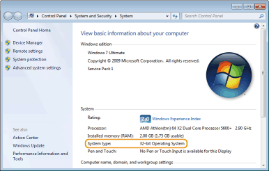

[Start]

0JJ7-00Y
Windows XP Professional/Server 2003
[Start] select [Printers and Faxes].
select [Printers and Faxes].
[Start]
Windows XP Home Edition
[Start] select [Control Panel] [Printers and Other Hardware] [Printers and Faxes].
[Start]
Windows Vista
[Start] select [Control Panel] [Printer].
[Start]
Windows 7/Server 2008 R2
[Start] select [Devices and Printers].
[Start]
Windows 8/Server 2012
Right-click the lower-left corner of the screen select [Control Panel] [View devices and printers].
Right-click the lower-left corner of the screen
Windows Server 2008
[Start] select [Control Panel] double-click [Printers].
[Start]
If you are using Windows Vista/7/8/Server 2008/Server 2012, enable [Network discovery] to view the computers on your network.
Windows Vista
[Start] select [Control Panel] [View network status and tasks] under [Network discovery], select [Turn on network discovery].
[Start]
Windows 7/Server 2008 R2
[Start] select [Control Panel] [View network status and tasks] [Change advanced sharing settings] under [Network discovery], select [Turn on network discovery].
[Start]
Windows 8/Server 2012
Right-click the lower-left corner of the screen select [Control Panel] [View network status and tasks] [Change advanced sharing settings] under [Network discovery], select [Turn on network discovery].
Right-click the lower-left corner of the screen
Windows Server 2008
[Start] select [Control Panel] double-click [Network and Sharing Center] under [Network discovery], select [Turn on network discovery].
[Start]
If your computer does not display the [CD-ROM/DVD-ROM Setup] screen after you insert the CD-ROM/DVD-ROM, follow the procedure below. This following example uses "D:" as the name of the CD-ROM/DVD-ROM drive. The CD-ROM/DVD-ROM drive name may be different on your computer.
Windows XP/Server 2003
[Start] select [Run] enter "D:\MInst.exe" click [OK].
[Start]
Windows Vista/7/Server 2008
[Start] enter "D:\MInst.exe" in [Search programs and files] or [Start Search] press the [ENTER] key on the keyboard.
[Start]
Windows 8/Server 2012
Right-click the lower-left corner of the screen select [Run] enter "D:\MInst.exe" click [OK].
Right-click the lower-left corner of the screen
If you are not sure whether your computer is running 32-bit or 64-bit Windows, follow the procedure below to check.
1
Display [Control Panel].
Windows Vista/7/Server 2008
[Start] select [Control Panel].
[Start]
Windows 8/Server 2012
Right-click the lower-left corner of the screen select [Control Panel].
Right-click the lower-left corner of the screen
2
Display [System].
Windows Vista/7/8/Server 2008 R2/Server 2012
Click [System and Security] or [System and Maintenance] [System].
Click [System and Security] or [System and Maintenance]
Windows Server 2008
Double-click [System].
Double-click [System].
3
Check the bit architecture.
32-bit operating systems
[32-bit Operating System] is displayed.
[32-bit Operating System] is displayed.
64-bit operating systems
[64-bit Operating System] is displayed.
[64-bit Operating System] is displayed.

Windows XP/Server 2003
[Start] [Control Panel] select [Add or Remove Programs].
[Start]
Windows Vista/7/Server 2008 R2
[Start] [Control Panel] select [Uninstall a Program].
[Start]
Windows 8/Server 2012
Right-click the lower-left corner of the screen [Control Panel] select [Uninstall a Program].
Right-click the lower-left corner of the screen
Windows Server 2008
[Start] select [Control Panel] double-click [Programs and Features].
[Start]
Windows XP
[Start] [Control Panel] [Performance and Maintenance] [System] [Hardware] select [Device Manager].
[Start]
Windows Vista/7/Server 2008 R2
[Start] [Control Panel] [Hardware and Sound] or [Hardware] select [Device Manager].
[Start]
Windows 8/Server 2012
Right-click the lower-left corner of the screen [Control Panel] [Hardware and Sound] select [Device Manager].
Right-click the lower-left corner of the screen
Windows Server 2003
[Start] [Control Panel] [System] [Hardware] select [Device Manager].
[Start]
Windows Server 2008
[Start] select [Control Panel] double-click [Device Manager].
[Start]